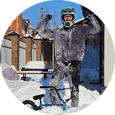

Отзывы

Миша Л.
МТБ-райдер
«Я в экстремальном МТБ с 12 лет. Через мои руки прошли десятки байков,
рам и комплектух. Скажу честно: найти нормальный вел в России — тот ещё
квест. Либо китайское г***но, которое разваливается после первого
бердикта, либо цены космические за бренд. В Тарра я зашёл чисто
глянуть, а вышел с новым байком. Взял полный комплект Commencal
Clash — рама, подвеска, вилсет, система. Ребята реально шарят:
подобрали ростовку под мой стиль катания, прокачали колёса вставками,
чтобы не пробиваться на каменном рубилове, даже пружину в переключатель
поставили усиленную — знают, что там байк ведёт себя тише и надёжнее
на больших фигурах. За два месяца активного катания в байкпарках,
горах, лесу и на стрите — ни одного люфта, ни одной трещин.
Всё держит мёртво, работает тихо, ровно, как по маслу. Теперь всем
своим пацанам говорю: за железом — только в Тарра».
«В шоссе важны ватты, аэро и надёжность. В Тарра собрали мне байк
на карбоновой раме Merida с группой Ultegra. Подогнали посадку,
прокачали колёса под мой вес, дали дельные советы по обслуге. Сезон
откатал без единого прокола. Для гонок и тренировок — только к ним».
«В Тарра помогли выбрать мой первый шоссейный велосипед, чтобы
кататься с моим парнем Мишей. Все объяснили простым языком, без
снобизма и технического жаргона. Теперь каждые выходные в седле,
качаю и кайфую. Спасибо, что делаете спорт доступным для новичков».